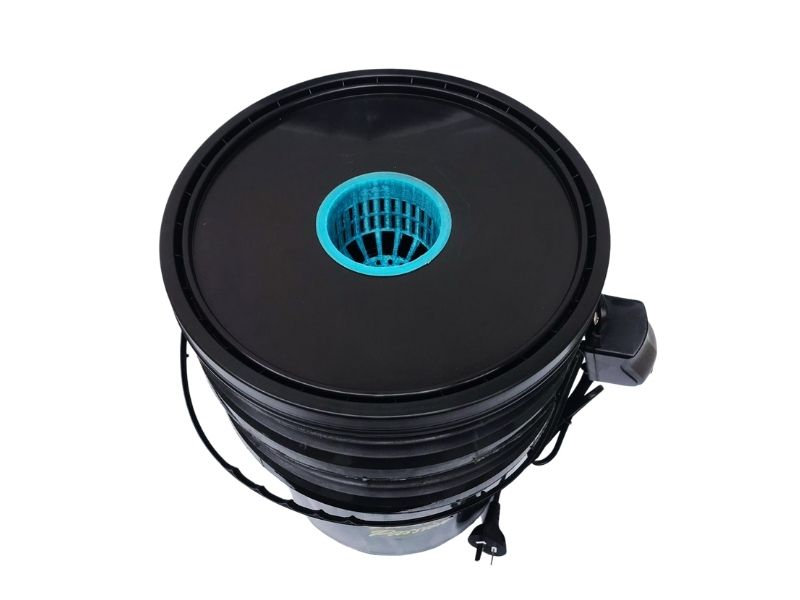

Estilo de porta maceta tuvo PVC, permite el cultivo de varios esquejes.

Balde individual para nuestra huerta, no es necesario usar esquejes.
El phmetro es un medidor de ph, siendo esta su función principal. El ph es el potencial de hidrógeno que indica los niveles de acidez o alcalinidad de una sustancia.
Las lecturas de EC se pueden expresar como TDS; en términos de hidroponía, los TDS especifican la concentración de sales y la fuerza de una solución nutritiva.
Permite la circulación continua del agua para poder distribuir los diferentes nutrientes que apliquemos en nuestro cultivo
Permite oxigenar el agua de nuestro cultivo para el buen desarrollo de nuestras plantas.